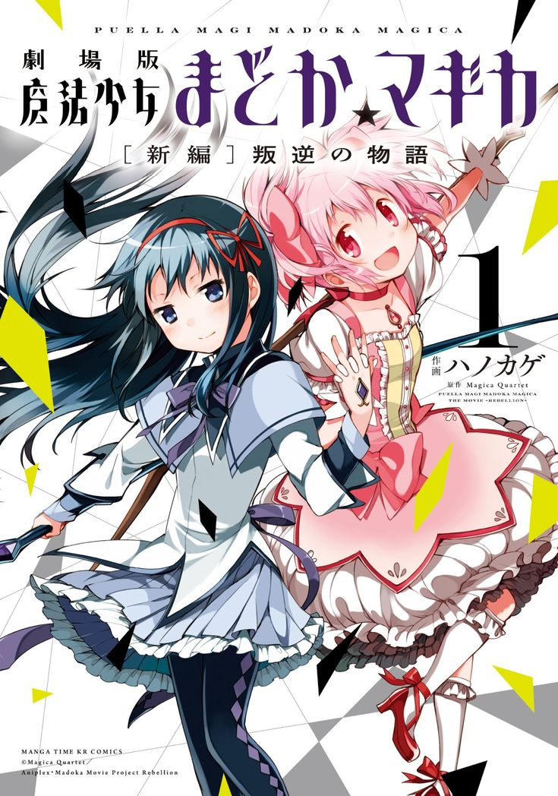

Madoka Magical
Thể loại: Fantasy, Tâm lý, Bi kịch
Mô tả:
Madoka Magica là một bộ ma pháp thiếu nữ tâm lý, bi kịch, fantasy, nổi tiếng với việc phá vỡ hình ảnh ma pháp truyền thống. Dưới lớp vỏ màu sắc dễ thương là một câu chuyện u tối, đặt ra nhiều câu hỏi về ước mơ, cái giá phải trả và ý nghĩa của hy sinh. Tác phẩm gây ấn tượng mạnh nhờ cách kể chuyện bất ngờ, âm nhạc ám ảnh và chiều sâu triết lý.
Tóm tắt cốt truyện:
Kaname Madoka là một nữ sinh trung học bình thường cho đến khi cô gặp Kyubey, một sinh vật kỳ lạ có khả năng biến các cô gái thành ma pháp thiếu nữ để chiến đấu chống lại phù thủy. Đổi lại, họ được ban cho một điều ước. Madoka chứng kiến những người bạn xung quanh mình bước vào thế giới ma pháp, nơi các trận chiến không hề lung linh như cô từng tưởng tượng. Khi dần hiểu rõ hơn về bản chất của hệ thống ma pháp và những hệ quả đi kèm với điều ước, Madoka buộc phải đối diện với lựa chọn quan trọng có thể thay đổi vận mệnh của rất nhiều người. Madoka Magica là câu chuyện về việc trưởng thành, khi một ước mơ tưởng chừng đẹp đẽ lại ẩn chứa cái giá rất lớn, và lòng tốt có thể dẫn đến những quyết định đầy đau đớn nhưng cao cả.
Bình luận
Vui lòng đăng nhập để bình luận.